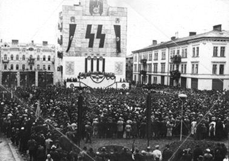
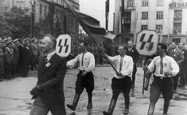
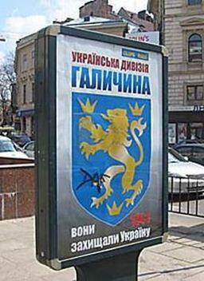

On peut être surpris de la lecture paradoxale de l’histoire faite par les médias occidentaux. Ainsi cette presse, notamment française, toujours si enclin à trouver le fasciste en tout citoyen de la droite nationale et populaire se veut bien silencieuse face aux milices néo-nazies qui sévissent ouvertement en Ukraine.
La France n’a bien sûr pas de leçon de morale à donner sur le passé collaborationniste de l’Ukraine car la Division SS « Charlemagne » demeure, en France, le pendant de la division SS ukrainienne « Galicie ». Mais autant il parait aujourd’hui légitime de s’alarmer de la résurgence de groupuscules néo-nazis dans plusieurs pays d’Europe, autant le silence fait sur les milices ukrainiennes qui assassinent dans le Donbass est consternant.
Pourtant cette montée extrémiste n’est pas nouvelle puisqu’en 2009 différents évènements auraient dû inquiéter l’Union Européenne et les médias occidentaux. Ainsi, le 28 avril 2009, la principale formation néofasciste locale, « Svoboda » (Liberté), dirigée par Oleh Tiahnibog, faisait installer à Lviv (Lwow), capitale de la Galicie en Ukraine occidentale, de grands panneaux publicitaires en l’honneur de la division Waffen SS « Galizien » (Halitchina, en ukrainien)1.
Aujourd’hui, ces milices demandent la réhabilitation des « Héros » de la Division SS « Galicie » arguant le fait que ces hommes ont, durant la guerre 41-45 en Ukraine, participé à la « résistance nationale »…
La Division de la Waffen SS « Galicie »
 Cérémonie de la création de la 14eme division « Galicie » de la Waffen SS a LvivL’idée de créer des troupes SS slaves pour combattre l’URSS avait germé, chez les militaires allemands et dans l’entourage de Rosenberg, ministre nazi chargé des Territoires de l’Est après l’Opération Barberousse. Mais Hitler et son entourage rejeta cette proposition : il n’était pas question de former de grandes unités indépendantes composées majoritairement d’untermenschen slaves.
Début 1943, tandis que les Allemands et leurs alliés se font balayer à Stalingrad, le SS-Brig.Fhr Dr Otto Wächter, alors gouverneur de la Galicie propose à Heinrich Himmler de créer une nouvelle division de la Waffen SS constituée avec des volontaires ukrainiens.
Wächter, qui se trouve à Lviv depuis 1941, est connu pour ses sympathies envers les Ukrainiens.
Il n’est donc pas surprenant de le voir prendre l’initiative de former une grande unité qui serait levée avec des Galiciens, anciens citoyens de l’Autriche-Hongrie, catholiques et plus « occidentalisés » que les Ukrainiens de l’est.
Le thème choisi pour le recrutement est très simple : la lutte sans pitié contre le Bolchevisme et le judaïsme politique.
Les nécessités militaires l’emportent sur les exigences raciales alors en vigueur à la Waffen SS et Himmler, malgré sa haine envers les Slaves, Himmler ne peut qu’accepter.
Création de la SS-Freiwilligen –Division « Galizien »Le 28 avril 1943, Wächter rend le projet public. La nouvelle unité est baptisée « SS-Freiwilligen-Division « Galizien », nom impropre étant donné le caractère plus ukrainien que galicien de la division.
Parmi les ukrainiens, les avis sont partagés : les Nationalistes de Bandera, chef de l’organisation des nationalistes ukrainiens (OUN). Pensent que les Ukrainiens ne feront que servir de chair à canon et s’opposent à ce projet.
Du côté des collaborateurs, en revanche, on est enthousiaste. Le chef du Comité Central Ukrainien du Gouvernement Général (Pologne), le professeur Volodymyr Kubiiovych se trouve en effet mêlé au projet depuis qu’il a proposé, le 8 mars 1943, au Gouverneur-Général Hans Frank, de lever une force armée ukrainienne pour combattre les communistes.
Des Ukrainiennes rendent hommage aux dignitaires nazis et aux volontaires ukrainiensLe recrutement commence dès le 1er mai. Les soldats doivent mesurer au moins 1,65 m et avoir de 18 à 35 ans. De nombreux volontaires se présentent. Comme toujours, on y trouve de tout : des aventuriers, des gens qui pensent échapper à leurs conditions de vie, des volontaires qui croient intégrer une nouvelle Légion Ukrainienne identique à celle (les Sichovi Striltsi) qui avait combattu contre les Russes dans l’Armée austro-hongroise au cours du premier conflit mondial et des adhérents au gouvernement en exil de l’UNR. Le 4, le professeur Volodymyr Kubiiovych s’adresse à la population ukrainienne et lui demande de fournir massivement des volontaires à la division.
Dès le 8 mai 1943, 32.000 hommes se sont portés volontaires ! Le 3 juillet 1943, Gottlob Berger annonce que le total de volontaires est monté à 80.000. Mais seuls 13.245 hommes sont finalement retenus pour la division sur les 30.000 qui ont été acceptés.
La plus grande partie des volontaires provient des villes d’Ukraine occidentale (Ivano-Frankivsk, Ternopil et Lvov en particulier). Le 22 octobre, la division est rebaptisée 14. Galizische SS-Freiwilligen-Infanterie-Division.
Affiches de propagande pour la division SS Ukrainienne
Ces jeunes engagés sont principalement des étudiants et d’anciens dirigeants des formations militaires de la Première Guerre mondiale, qui s’estiment sans lien avec la Russie ou la Pologne. Tous voient en la « Galizien » une base potentielle pour la future armée ukrainienne qui, après la guerre, pourrait jouer un rôle décisif dans la formation d’un État ukrainien indépendant.
La bataille sanglante de Brody
Après une formation en Prusse orientale et en Silésie, la division est envoyée sur le front au début de l’année 1944. Malgré son manque d’expérience, elle est bien équipée et a subi un entraînement intensif. La division se compose de trois régiments d’infanterie, d’un d’artillerie et d’un régiment de réserve à l’entraînement. Les unités adjointes consistent en trois bataillons de fusiliers, des troupes du génie, des services de communication et de DCA ainsi qu’un hôpital de campagne.
A la mi-février 1944, la grande unité reçoit l’ordre de mettre sur pied un groupement de combat de circonstance, la SS-Kampfgruppe ‘Beyersdorff’, chargé de lutter contre les partisans du secteur de Zamość, dans le sud-est de la Pologne. Deux groupes de combat sont formés.
Après la période des actions contre les partisans, les divisions se livrent à des crimes de guerre. Le plus connu est la destruction du village polonais de Huta Pieniacka, où le 28 février 1944, selon diverses estimations, de 800 à 1000 habitants innocents perdirent la vie.
Le 11 mars 1944, les SS ukrainiens commettent un nouveau massacre à Pidkamin, 2000 personnes, dont la majorité étaient des femmes et des enfants, ont été massacré par la division SS et l’armée nationaliste ukrainienne (UNA dirigée par Bandera). Un autre massacre contre des civils polonais a eu lieu à Palikrowy entre le 12 et 16 mars, 365 polonais ont été tués.
Prise dans la tourmente de l’offensive d’été soviétique déclenchée le 22 juin 1944 et qui balaie tout sur son passage, les SS ukrainiens combattent en juillet dans la poche de Brody. Les Soviétiques concentrent leurs forces et les attaquent le 19 juillet. Les Ukrainiens opposent une résistance farouche, et la ville de Pidhirtsy change plusieurs fois de mains avant de voir les SS submergés sous le nombre. Russes et Ukrainiens ne se font pas de quartiers : les SS savent qu’ils seront exécutés s’ils tombent aux mains de l’ennemi.
Le 23, la bataille de Bordy est terminée. Sur un total de 11.000 Ukrainiens en ligne avant le 14 juillet, seuls 3000 SS ont réussi à rejoindre les lignes allemandes dans les Carpates, 7000 ont été tués ou blessés et plus de 1000 sont portés disparus.
La division SS est rapatriée en Allemagne, à Neuhammer (Silésie), pour y être reconstituée.
Le 29 août 1944, une rébellion initiée par le ministre slovaque de la défense, le général Catlos, et menée par une partie de l’armée et par des partisans communistes, éclate dans la partie occidentale de la Slovaquie.
Les insurgés, au nombre de 25.000 environ, sont aidés par quelques superviseurs soviétiques.
Les Allemands réagissent rapidement et expédient plusieurs groupes de combat (appelés Kampfgruppen Wildener et Kampfguppen Wittenmeyer) dont la division « Galizien ». Au côté de la garde locale, (Hlinkova garda), engagent les combats contre les partisans slovaques, réfugiés dans les montagnes. Les SS ukrainiens éprouvent les pires difficultés à combattre les insurgés slovaques mais ils arrivent cependant à leurs fins aux termes de combats compliqués. Aussi, les dirigeants allemands font un geste peu coûteux en faveur des Ukrainiens en rebaptisant la division qui devient la 14.Waffen-Grenadier-Division der SS (Ukrainische Nr 1) le 12 novembre 1944. Mais les Allemands font l’erreur de vouloir rattacher les troupes ukrainiennes à l’armée de Vlassov ; le général Vlassov est en effet un Russe nationaliste peu enclin à accorder une quelconque autonomie, et encore moins l’indépendance, à l’Ukraine.
Le 17 mai 1944, Heinrich Himmler vient assister à des entrainements des SS Ukrainiens
La division est envoyée début octobre 1944 en Slovaquie pour réduire le soulèvement qui s’y est produit. Fin janvier 1945, elle est déplacée en Slovénie pour y combattre les partisans de Tito tout en y maintenant des relations amicales avec la guérilla anti-communiste serbe des Tchetnik.
Combats en Slovénie
Fritz Freitag, dernier commandant des SS UkrainiensEn 1945, au cours de la seconde quinzaine du mois de mars, la division réussit à encercler d’importantes troupes titistes dans le secteur de Kozjak, en Slovénie. Mais le 20 mars, alors que le succès semble acquis, elle reçoit l’ordre de céder ses armes et tout son équipement à la 10.Fallschirmjäger-Division qui est alors en cours de constitution ! Cet ordre émane d’Adolf Hitler qui vient de s’apercevoir que la division ukrainienne est mieux équipée et plus fournie en matériel que n’importe quelle unité allemande. Fou de rage, le Führer a décidé de désarmer les Ukrainiens. Cet ordre semble dramatique pour les SS Ukrainiens car les Russes sont à seulement 40 km des positions tenues par la division. Le 21, Fritz Freitag gagne le QG d’Heinrich Himmler à Salzburg pour tenter de faire annuler cet ordre qui condamne sa division à un anéantissement certain. Les négociations traînent en longueur. Pendant ce temps, les Soviétiques progressent dangereusement en direction de Marburg et de Graz en Autriche. La division ukrainienne est chargée de défendre Marbug coûte que coûte. Le 28, l’ordre du Führer est finalement annulé. Le 30 mars, la division est renforcée par des volontaires hongrois et se prépare à son dernier grand combat pour le Reich.
Le dernier combat des SS ukrainiens
Le 1er avril 1945, les derniers volontaires ukrainiens se préparent à se lancer dans leur dernier grand assaut contre l’Armée Rouge. Leur objectif est d’enrayer l’avancée des Soviétiques qui entrent en Autriche en essayant de reprendre la petite ville de Bad Gleichenberg, la plupart savent qu’il s’agit d’une mission suicide et perdue d’avance.
Les SS Ukrainiens arrivent à prendre le château de Gleichenberg mais son assaut sur la ville est partiellement repoussé par les Soviétiques. Ces derniers réagissent vigoureusement. La bataille pour prendre la ville devient féroce et les pertes deviennent très lourdes dans chaque camp. Les combats deviennent statiques et se font au corps à corps et à la grenade.
Le 15 avril, les Soviétiques attaquent une nouvelle fois à l’aide de nouvelles unités fraîchement arrivées pour en finir avec la résistance Ukrainienne. Le centre des combats se déroule au niveau du château de Gleichenberg. Les Ukrainiens sont pratiquement à court de munitions et n’ont plus aucun soutien de l’artillerie.
Se sachant condamnés, les SS ukrainiens fuient vers l’Ouest mais ils seront rattrapés par l’aviation soviétique et subiront leurs dernières pertes sous le feu des avions russes.
Les derniers SS de la division ukrainienne dépose les armes le 12 mai près de Radstadt. Pour éviter d’être livrés aux Soviétiques, les Ukrainiens prétendent être des Galiciens, donc des Polonais ! Ils sont alors internés au camp de Rimini, en Italie où ils reçoivent le secours de l’archevêque Ivan Buchko, prélat ukrainien au Vatican, qui va intercéder en leur faveur auprès du pape Pie XII.
 Lviv 2009 - Des panneaux publicitaires rendent hommage aux vétérans de la division SS « Galicie » ayant combattu au côté de l’Allemagne hitlérienne. Ses panneaux publicitaires portent l’inscription : «Division ukrainienne Galicie. Ils ont défendus l’Ukraine. »Une enquête est toutefois ouverte et dirigée par la commission canadienne pour les crimes de guerre. Pendant toute la durée des travaux de la commission, se manifeste une campagne active des diasporas baltes et ukrainiennes, dont les représentants exigent que ne soient pas examinées les preuves présentées par les pays occidentaux d'Europe et par l'URSS. Après avoir siégé près de 2 ans, la commission canadienne pour les crimes de guerre, accepte formellement l'absence de responsabilité collective pour les crimes de guerre de la division « Galicie ». Dans le compte-rendu officiel de la commission, les membres de la « SS Galicie » sont mentionnés comme des « réfugiés ayant été victimes de la propagande communiste » ; quant à la raison de leur entrée volontaire dans les rangs des SS, elle est renseignée comme étant une « haine à l'égard de la tyrannie communiste ».
Ceux-ci sont finalement relâchés et reçoivent l’autorisation d’émigrer aux États-Unis et dans les pays du Commonwealth. Une grande partie des membres de la division choisit l'exil au Canada, où réside une importante communauté ukrainienne. Dans son rapport établi en 1986, la commission canadienne de recherche sur les criminels de guerre affirme que « leur comportement (celui des anciens Waffen SS) depuis qu'ils sont venus dans ce pays a été bon et ils n'ont jamais indiqué de quelque façon que ce soit qu'ils avaient été infectés par l'idéologie nazie [...] Il semble qu'ils avaient été volontaires pour se battre contre l'Armée rouge pour des raisons nationalistes qui ont connu une forte impulsion provoquée le comportement des autorités soviétiques durant l'occupation de la partie occidentale de l'Ukraine après la signature du pacte Germano-Soviétique ». La même commission d'enquête affirme dans ce rapport final de 1986 que les accusations de crimes de guerre commises par la 14e division SS n'ont jamais été prouvées.
Etrange complaisance de cette commission canadienne qui ne semble pas vouloir se référer aux susdites interventions de la Division SS Galicie en Slovénie et Slovaquie dans le cadre d'opérations de lutte contre les partisans locaux pour lesquelles les divisions de la Waffen SS sont intervenues de manière systématique. Ces actions de la Division SS Galicie contre des résistants d'autres pays luttant sur leurs territoires nationaux contre les occupants nazis ne peuvent donc évidemment pas être imputées à des « raisons nationalistes » ukrainiennes.
Par ailleurs, « l'Institut polonais de la mémoire » estime quant à lui, via une analyse publiée le 18 novembre 2003, que ce sont bien des hommes du 4e régiment de la division Galicie qui ont commis le massacre, et ce sur la base de documents exhumés en 1999, soit après l'enquête canadienne. Il semble donc évident que le Canada a tout intérêt à minimiser les massacres commis par ses désormais citoyens canadiens…
27 avril 2013 - Lviv (Ouest de l’Ukraine)Les adeptes de la SS galicienne, réhabilitée de nos jours en Ukraine occidentale, réclament une reconnaissance officielle de leurs « mérites ». Chaque 28 avril est désormais l’occasion de raviver la flamme de leur souvenir nostalgique. Aux Etats-Unis et au Canada, la mémoire de ces ex-combattants nazis galiciens est toujours honorée au sein de la diaspora ukrainienne. Cette dernière est notamment formée d'anciens de la division SS galicienne qui combattit « héroïquement » (sic) l’Armée rouge et les partisans communistes en Slovaquie et en Slovénie. On ne peut donc s’étonner de la complaisance, pour ne pas dire le soutien, des Etats-Unis envers les milices ukrainiennes.
F.M.
1Le gouvernement ukrainien, par la voix de son ministre de l’Intérieur de l’époque, avait estimé qu’il n’y avait rien d’illégal à cette initiative.
Sources pour cet article :
Ligne de Front HS « Les Légions Maudites » 2012
Dictionnaire de la Waffen SS III – Heimdal 2014
« 14ème Division SS Galicie » par Roger Cousin 2014
Partager cette page